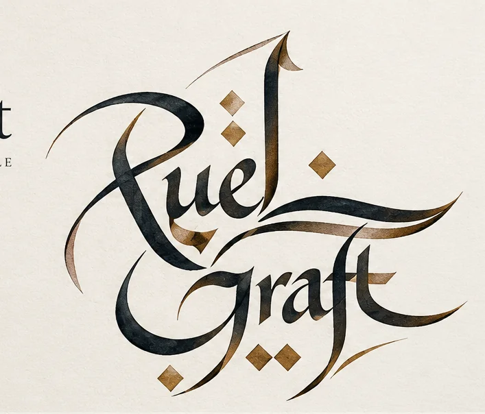
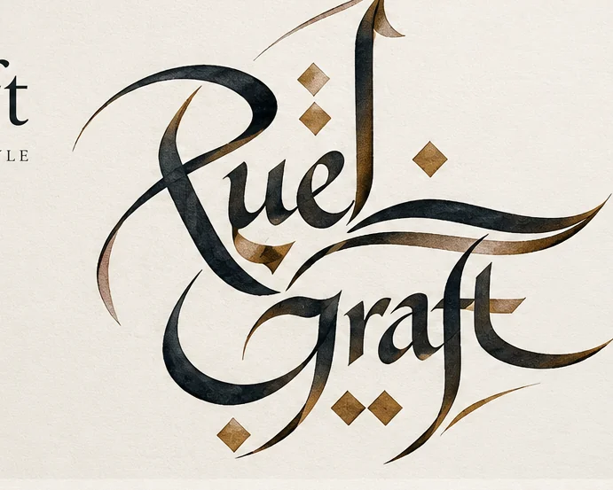
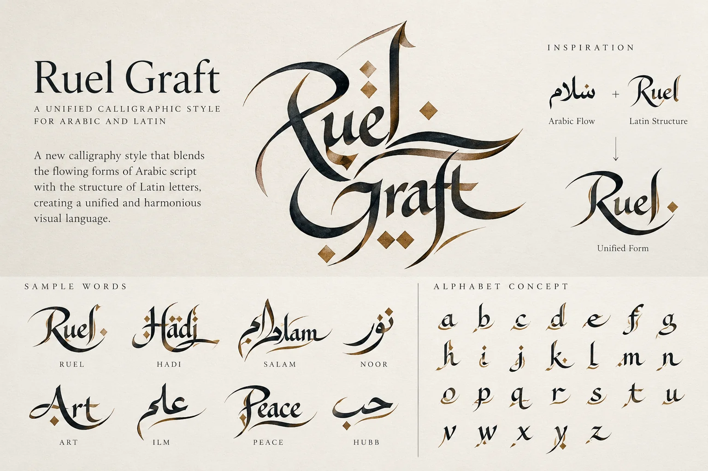
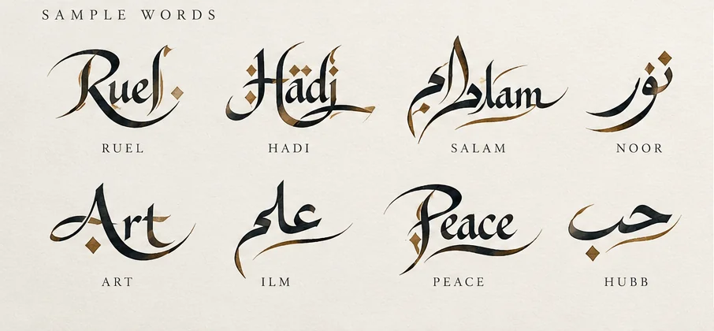
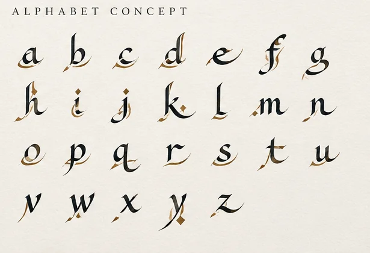

ا l
Shared proportions
Use tall Arabic and Latin strokes to develop a common visual scale.
AN EXPERIMENT IN TWO WRITING TRADITIONS
Introducing Wasl (وصل) — an evolving calligraphic exploration bringing the rhythm of Arabic script and the structure of Latin lettering into one visual language.

THE ART OF CONNECTION / وصلA NEW LANGUAGE OF FORM
Arabic calligraphy celebrates movement, proportion and connection. Latin lettering brings its own centuries of elegance and clarity. Wasl explores what happens when those traditions meet.
This is a developing artistic style, not yet a finished font or standardized writing system. Each study brings us closer to a consistent set of strokes, proportions and expressive possibilities.
Discover the design approach ↗FEATURED STUDY / 001
Expressive curves, architectural strokes and gold accents shape the early visual identity of Wasl. A meeting of traditions without erasing either one.
See the studies ↗
THE DESIGN DNA
Five guiding ideas shape the development of this emerging calligraphic vocabulary.
Use tall Arabic and Latin strokes to develop a common visual scale.
Explore Arabic-inspired joins and sweeping extensions in Latin lettering.
Turn dots, diamonds and diacritics into deliberate design elements.
Preserve recognizable forms from both scripts while finding harmony.
Keep room for hand-drawn variation, gesture and experimentation.
SELECTED EXPERIMENTS
Early concept artwork for the Wasl visual language. These are explorations, not final alphabet specimens.



“The most interesting things happen between languages.”RUEL GRAFT / CREATIVE PHILOSOPHY
BEHIND THE WORK
Ruel Graft is a creative identity exploring the intersections of art, language, technology and human experience.
Wasl is one expression of that curiosity: an invitation to see familiar letters differently. Alongside this project, Ruel Graft explores software, digital consulting, language learning and creative practice.
LET'S CREATE SOMETHING
Interested in the calligraphy project, a creative collaboration, or following its development? Get in touch by email.
Start a conversation ↗Email inquiries only · No online ordering or payment processing yet